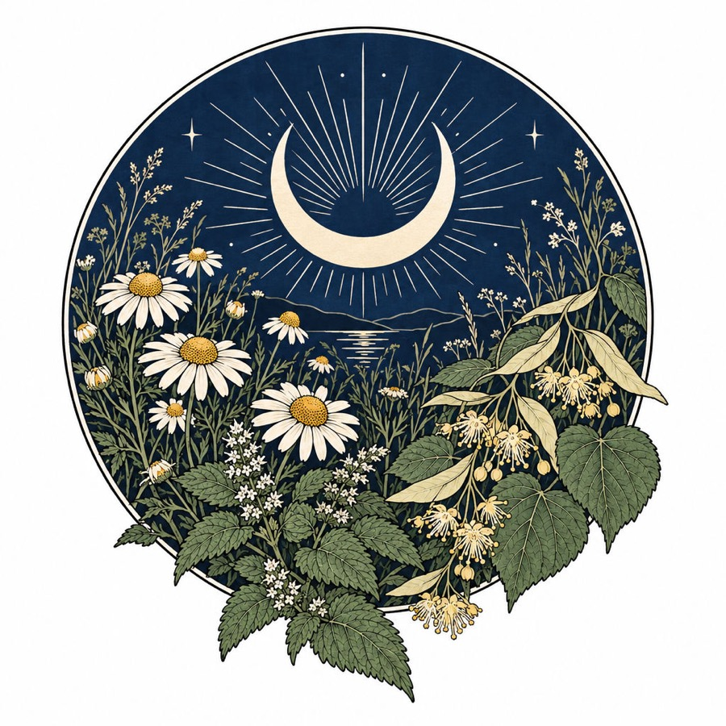

II
Wild Woman · LA
October

The Untamed Night
Daring and untamed.
Celestial Rest
Made for Jasmine, from the daring and untamed night.

Daring and untamed.
It depends on how often it's brewed. That decides when a customer is ready for the next one.
A reminder timed to the pouch, not the calendar, is what brings them back.
Estimated from about 2 oz, a heaping teaspoon a cup.
What's inspiring Wild Woman right now?
The front is yours to use, in a box, on a shelf, wherever it helps. Download the front.
Khari Angel
A card made for Wild Woman as a gift. Not a commissioned project; Wild Woman isn't affiliated with me.